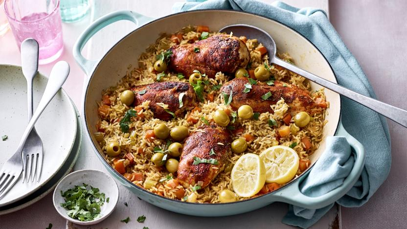

Description
Recipe:
- 2 tsp smoked paprika
- 2 tsp ground cumin
- 1 tsp asafoetida (or ½ tsp each of onion and garlic powder)
- 2 tsp dried mixed herbs
- 4 chicken breasts
- 2 tbsp olive oil
- 1 onion, chopped
- 2 peppers, sliced
- 4 sticks celery, chopped
- 2 carrots, chopped
- 200g/7oz brown or basmati rice
- 2 garlic cloves, chopped
- 1 chicken low-salt stock cube
- 16 olives
- 2 handfuls fresh parsley, leaves picked and chopped
- 1 lemon, juice only
- Step 1
- Step 2
- Step 3
- Step 4
- Step 5